TECHVESTVENTURES RISK ALERTS — Daily Mode — Emergent News Digest — November 4, 2026, 9:00 AM EST see all graphs click TVV Risk Center
TVV RESEARCH DIGEST — November 4, 2026 — 12 desks
1. Major Geopolitical Conflict Developments
- ★ Iran reads the midterms as a vote against war: parliament speaker and chief negotiator Ghalibaf posted that Americans said "NO TO WAR" and warned of "a Nightmare" if the message is ignored; Supreme Leader Mojtaba Khamenei said any repeat US attack would draw a response of "much broader dimensions". President Trump told The Wall Street Journal the war was "part of" the GOP losses but that he "would have done it again". Al Jazeera · CBS News · AP
- ★ Hormuz talks stalled but alive: Iran's Supreme National Security Council secretary Mohsen Rezaei called the US reply to Tehran's seven conditions "not convincing"; Qatar says both sides remain committed, and mediators expect feedback within 36 hours on a new proposal (Reuters via CBS). Trump confirmed the Qeshm strike as a "minor attack" on an anti-aircraft site. Near-term implication: Polymarket odds still price a low chance of a final deal soon (see graph). Al Jazeera · CBS News
- ★ Russia's overnight barrage: 310 drones (81 jet-powered Shaheds) hit 19 locations, with 272 downed per Ukraine's Air Force; strikes knocked power and water out across Kyiv and hit energy sites in Ternopil, Rivne and Dnipro (2 injured). Russia's MoD claims it downed 709 Ukrainian drones over 14 regions; Ukrainian strikes hit an Ozon logistics hub in Adygea. Komyshuvakha school-shelter toll: AP 37 confirmed dead with about 38 possibly trapped; ABC cites 31 killed at an aid site (conflicting counts). Kyiv Post · AP · ABC News
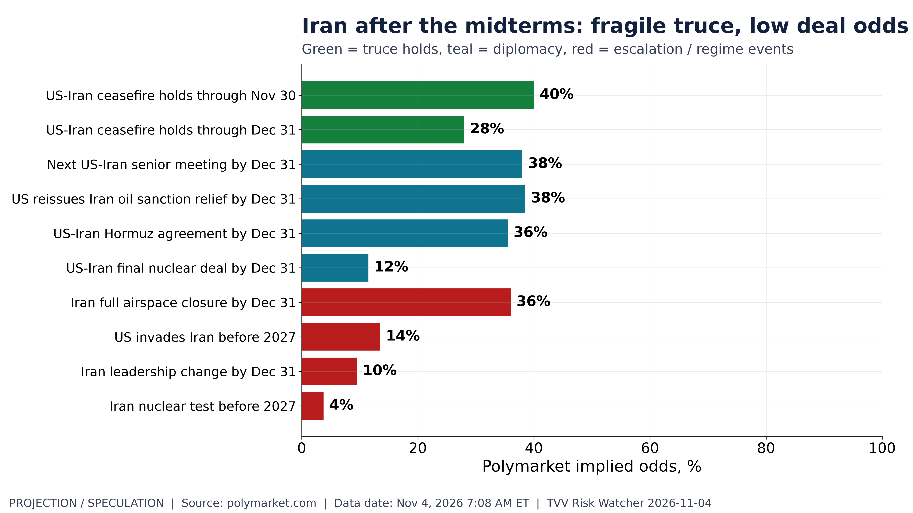
Iran after the midterms: fragile truce, low deal odds. Polymarket: US-Iran ceasefire holds through Dec 31 28%; final nuclear deal by Dec 31 12%. Polymarket, Nov 4, 2026 7:08 AM ET. [Projection/Speculation; data as of Nov 4, 2026 7:08 AM ET] Source: polymarket.com data page
2. Major Terror / Security Incidents
- ★ Europe air-travel hoax wave: seven flights were searched after bomb threats on Nov 3 (Ryanair into Rome with an Italian Air Force escort, LOT/Heathrow-origin flights in Warsaw, two in Sofia, Manchester-Murcia), a day after a Luton-Sofia Wizz Air diversion to Budapest. No explosives found; the UK calls them "malicious hoax threats" and authorities are checking for coordination. BBC News · AP
- ★ AI-assisted ransomware in the wild: Bitdefender says a 3AM ransomware affiliate encrypted about 37 of nearly 50 machines across a UK school estate, using what looks like an AI agentic loop to generate and revise commands, steal Veeam backup credentials and bridge three Active Directory domains. Separately, Qilin ransomware has shifted to automated cross-platform ESXi attacks. BleepingComputer · Dark Reading · Cyware
- ★ Exploited-flaw pace: CISA has added 283 known exploited vulnerabilities in 2026 so far versus 245 in all of 2025 (see graph). Trend implication: at the current pace 2026 ends near 340, about 40% above last year. CISA KEV
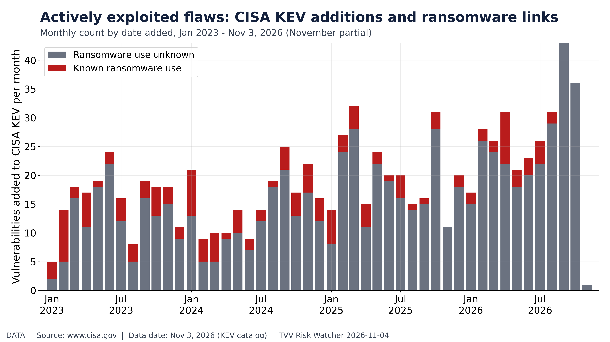
Actively exploited flaws: CISA KEV additions and ransomware links. CISA added 283 actively exploited flaws in 2026 through Nov 3 (27 ransomware-linked). CISA KEV, Nov 3, 2026. [Data; data as of Nov 3, 2026 (KEV catalog)] Source: cisa.gov data page
3. Earthquakes and Eruptions
- ★ No new M6.0+ earthquake with significant casualties or damage since Nov 1. The week's largest was M6.4 southeast of Easter Island (remote, no damage); 39 M5+ events in 7 days (see graph). USGS
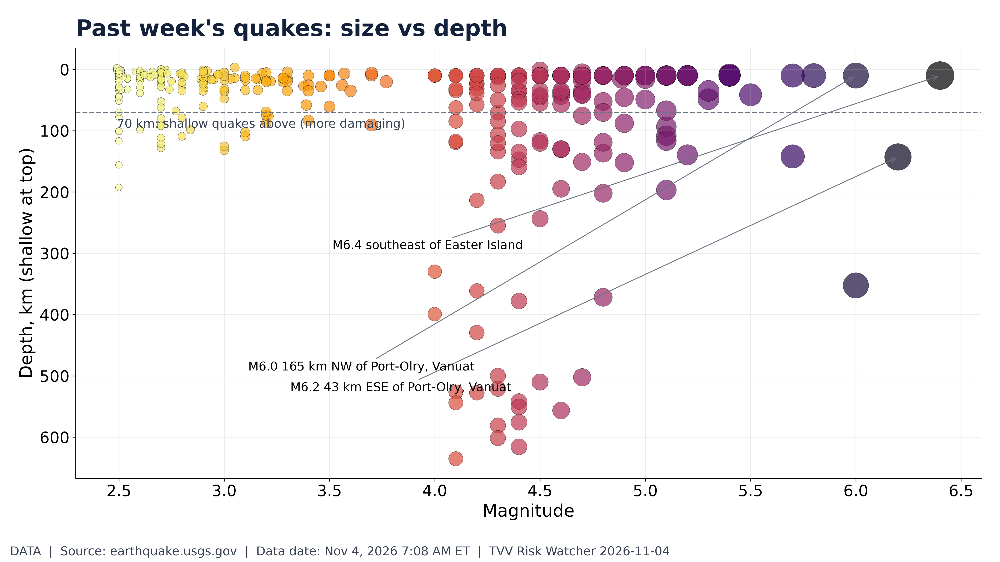
Past week's quakes: size vs depth. USGS M2.5+ past 7 days: 343 quakes, largest M6.4; 31 shallow M5+. USGS, Nov 4, 2026 7:08 AM ET. [Data; data as of Nov 4, 2026 7:08 AM ET] Source: earthquake.usgs.gov data page
4. Solar / Space Weather
- ★ Geomagnetic field quiet; SWPC 3-day forecast peaks at Kp 3.67 (Nov 5, 06 UTC), below storm level (see graph). Pole drift: steady warning, no new reading since Nov 1; no one can predict a reversal's timing (Michael's view: 2035 at the earliest). Next pole-drift globe Nov 8. NOAA SWPC
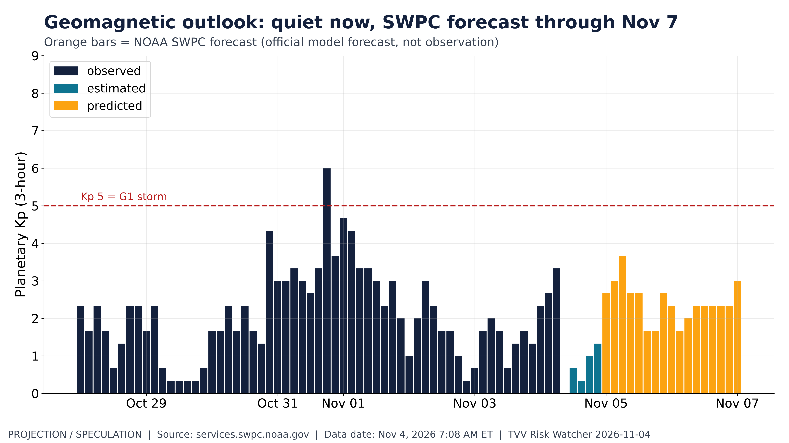
Geomagnetic outlook: quiet now, SWPC forecast through Nov 7. SWPC Kp: forecast max 3.67 through Nov 7; no G1 storm predicted. NOAA SWPC, Nov 4, 2026 7:08 AM ET. [Projection/Speculation; data as of Nov 4, 2026 7:08 AM ET] Source: services.swpc.noaa.gov data page
5. Critical Infrastructure / Transportation Disruptions
- ★ Ukraine's grid under winter pressure: a hit on a regional power distribution center forced emergency outages, water cuts and warming centers in Kyiv; Kovel lost most power on Nov 3; Zelensky lists generation and substation damage in nine regions. Russia names the Nalivaikovka (Kyiv) and Chizhovka (Zhytomyr) substations as targets. RBC-Ukraine · ABC News
- ★ Hormuz shipping claim, unverified: the IRGC says four "non-compliant" tankers struck mines on the prohibited southern route and were destroyed, with two more halted; BBC Verify found no evidence that four tankers were destroyed (conflicting claims). BBC News · Al Jazeera
- ★ Power prices as a political issue: electricity CPI keeps outrunning all-items inflation (Sep 2026), and the 24-month trend projection keeps the gap widening (see graph). Near-term implication: utility rate cases and data-center siting fights intensify under the new Congress and new governors. BLS CPI
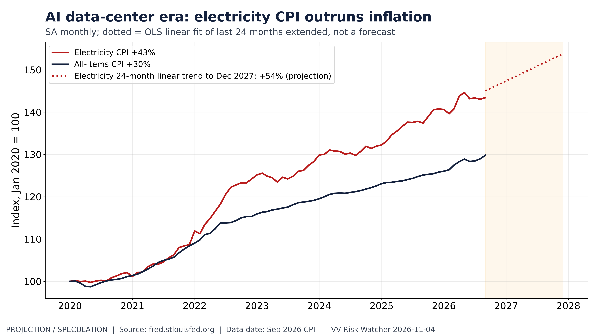
AI data-center era: electricity CPI outruns inflation. Electricity CPI +43% since Jan 2020 vs all items +30%; trend extrapolation (projection) to Dec 2027. BLS via FRED, Sep 2026. [Projection/Speculation; data as of Sep 2026 CPI] Source: fred.stlouisfed.org data page
6. Econo-Metrics
- ★ Labor market slack: September JOLTS openings 7.52M, hires 5.40M, quits 3.37M, layoffs 1.64M; the Beveridge curve sits near openings-per-unemployed of 1 (see graph). ADP October (8:15 AM ET) and ISM services (10 AM ET) are due today; the October jobs report is Fri Nov 6. BLS JOLTS
- ★ Repo plumbing tight: SOFR 3.95% vs IORB 3.90% on Nov 2 with the Fed's overnight reverse repo nearly drained ($0.43bn on Nov 3) — banks are paying up for cash (see graph). Dollar at a one-month low after the election. FRED · CNBC
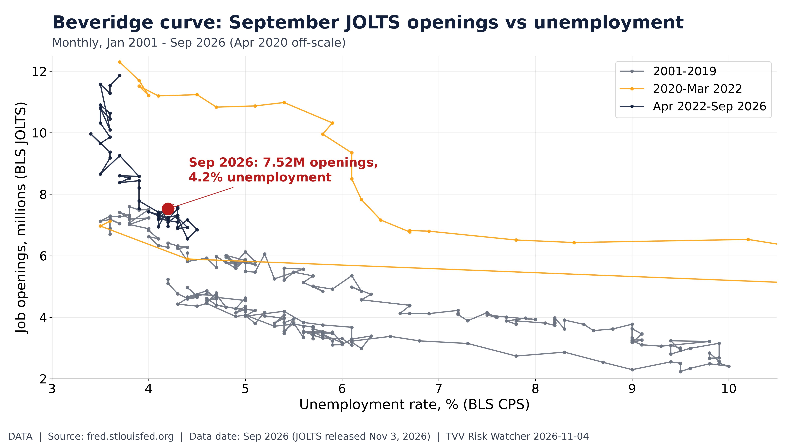
Beveridge curve: September JOLTS openings vs unemployment. Beveridge curve: Sep JOLTS openings 7.52M at 4.2% unemployment. BLS via FRED, released Nov 3, 2026. [Data; data as of Sep 2026 (JOLTS released Nov 3, 2026)] Source: fred.stlouisfed.org data page
7. Epidemic / Bio-Metrics
- ★ Ebola (Bundibugyo): ECDC's Nov 3 update counts 10,532 confirmed DRC cases and 5,126 deaths as of Nov 2 across eight provinces (Ituri worst), plus Kenya 9 cases/2 deaths and one Nigeria import evacuated to Switzerland; Al Jazeera reports more than 5,300 deaths (counts differ by source and reconciliation). No approved vaccine or treatment for Bundibugyo. ECDC · Al Jazeera · CDC
- ★ US respiratory season start: CDC RESP-NET shows flu hospitalizations running ahead of COVID and RSV this early; early rates are preliminary and revised up (see graph). No WHO, HK CHP, Taiwan CDC or China CDC confirmation of an SV.2.4 surge. CDC RESP-NET
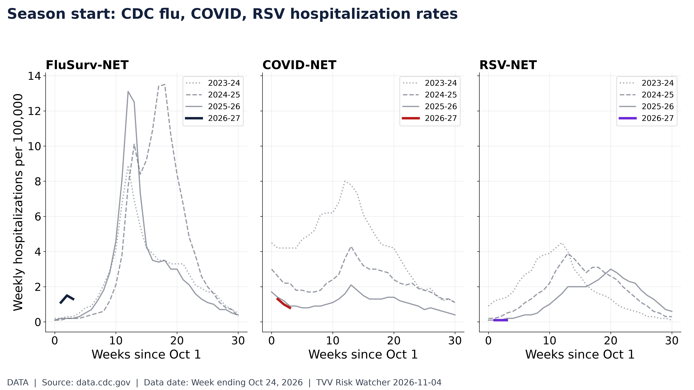
Season start: CDC flu, COVID, RSV hospitalization rates. RESP-NET week ending Oct 24: flu 1.3, COVID 0.8, RSV 0.1 per 100K. CDC, Oct 24, 2026. [Data; data as of Week ending Oct 24, 2026] Source: data.cdc.gov data page
8. Gold and Silver and Commodities
- ★ Metals jump on the blue wave: spot gold +2.97% to $4,044.90 and silver +4.27% to $51.90 (4:32 AM ET); platinum +3.38% to $1,463.95, palladium +5.57% to $985.50, as the dollar fell about 0.3%. Copper/gold ratio vs the 10-year yield (see graph): a falling ratio with high yields points to term-premium rather than growth. CNBC
- ★ Oil: Brent about $101.20 (-1.4%) and WTI $94.51 premarket on peace-talk hopes despite the IRGC tanker claims; EIA inventories at 10:30 AM ET. TradingKey
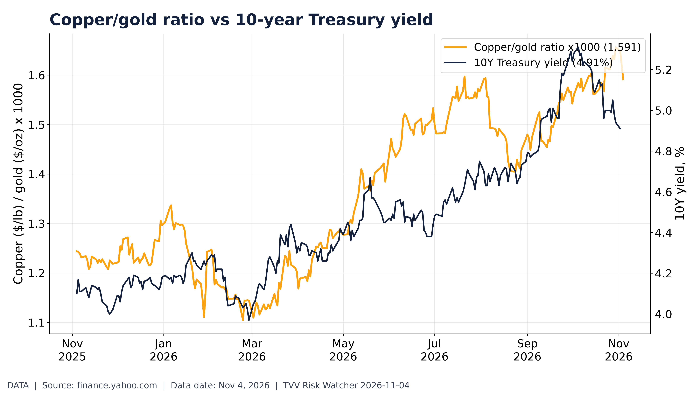
Copper/gold ratio vs 10-year Treasury yield. Copper/gold ratio 1.591 (x1000) vs 10Y 4.91% (growth gauge vs bond yields). Yahoo (COMEX), FRED, Nov 4, 2026. [Data; data as of Nov 4, 2026] Source: finance.yahoo.com data page
9. Stock Averages and Nasdaq Major Movers
- ★ Futures recover from election-night dip: Nasdaq-100 futures fell as much as 2.4% overnight on AI-regulation and data-center fears, then rebounded after Trump said he would accept the results and "work with the Democrats"; Dow futures +1.58%, S&P +0.83%, Nasdaq +0.21%. 10-year yield about 4.93%; bitcoin near $78,590 (see graph). TradingKey · CNBC
- ★ Winners and losers: Oracle +5.85%, Microsoft +2.74%, AMD +3.65%, Nvidia +2.29%; Apple -1.90%; Tesla and SpaceX fell more than 4-5% premarket on the Democratic sweep. Reuters via Investing.com · CNBC
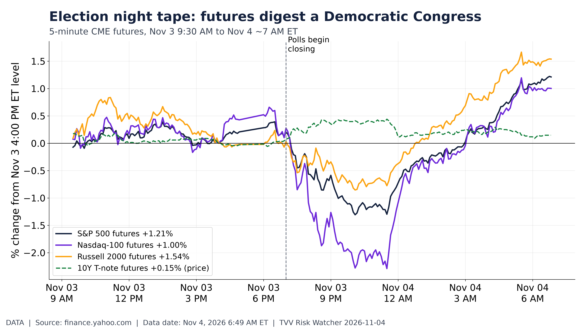
Election night tape: futures digest a Democratic Congress. US index and 10Y futures from Nov 3 close to 6:49 AM ET Nov 4 as Democrats won Congress. Yahoo Finance (CME). [Data; data as of Nov 4, 2026 6:49 AM ET] Source: finance.yahoo.com data page
10. Polymarket and Kalshi Sentiment Highlights
- ★ Prediction markets scored: Polymarket Election-Day favorites won 19 of 20 called races, Brier score 0.062 (0 = perfect, 0.25 = coin flip); the one miss was Kansas governor. Markets underpriced the size of the wave — Democrats won at least 258 House seats (NBC) and 54 Senate seats with 7 flips (TX, IA, KS, OH, ME, NC, SC); Alaska still counting (see graph). NBC News · The Guardian · Polymarket
- ★ Election-night odds paths: odds converged as networks called races; Kansas governor Democrat Holscher went from ~36% underdog to ~98%. Democrats also flipped governorships in Texas, Georgia, Nevada, Ohio and Iowa; exit polls put Trump's disapproval at 62%. Abdul El-Sayed becomes the first Muslim US senator. Polymarket · AP · BBC
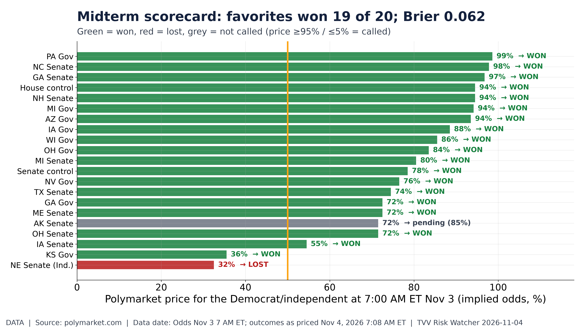
Midterm scorecard: favorites won 19 of 20; Brier 0.062. Polymarket Election-Day favorites won 19/20 called races (Brier 0.062); misses: KS Gov. Polymarket, Nov 4, 2026 7:08 AM ET. [Data; data as of Odds Nov 3 7 AM ET; outcomes as priced Nov 4, 2026 7:08 AM ET] Source: polymarket.com data page
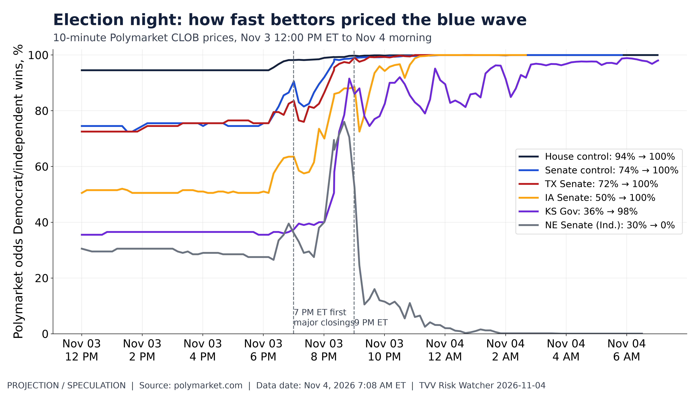
Election night: how fast bettors priced the blue wave. Polymarket odds paths Nov 3 noon to Nov 4, 2026 7:08 AM ET: House, Senate and upset races (TX, IA, KS gov, NE). Polymarket CLOB. [Projection/Speculation; data as of Nov 4, 2026 7:08 AM ET] Source: polymarket.com data page
11. Tech-Metrics
- ★ AMD record quarter: Q3 revenue $13.4bn (+45%) vs $13.06bn expected, adjusted EPS $2.09 vs $1.94; Data Center a record $8.5bn (+97%) on Instinct MI450 and EPYC. Q4 guide about $17bn ±3% vs $16.23bn consensus; AMD says server revenue should double in 2027. Shares +3.65% premarket after a 7-8% after-hours jump (see graph). AMD · CNBC · The Verge
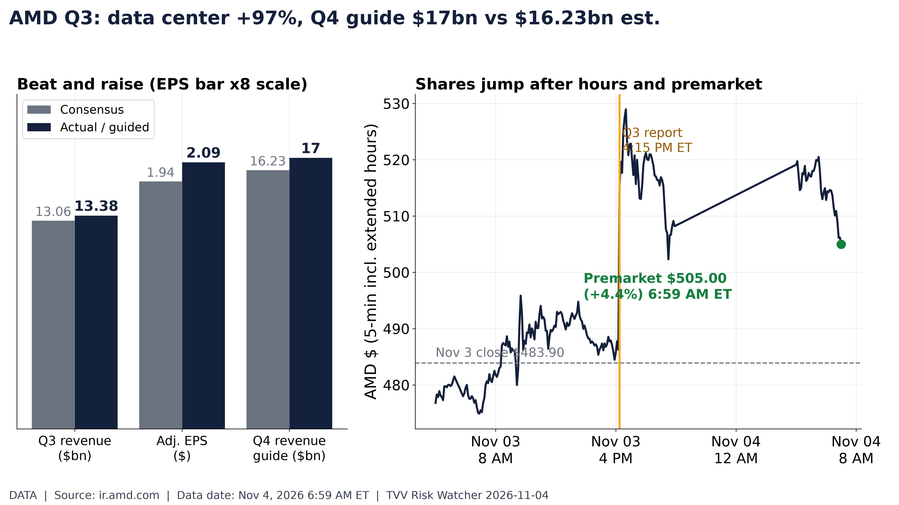
AMD Q3: data center +97%, Q4 guide $17bn vs $16.23bn est.. AMD beat ($13.38bn, $2.09 EPS), guided Q4 $17bn; shares $505.00 premarket, +4.4%. Yahoo, Nov 4 6:59 AM ET. [Data; data as of Nov 4, 2026 6:59 AM ET] Source: ir.amd.com data page
12. AI Hypergrowth Risks
- ★ Political risk enters the AI trade: data-center and neocloud names (CoreWeave, Applied Digital, Iren, Core Scientific) fell premarket while renewables surged, on expectations of hearings, permitting friction and state limits; Trump's veto limits federal action, but new Democratic governors in Texas and Georgia matter for siting (see graph). Reuters via Investing.com · Bisnow
- ★ AI success signal: AMD's data-center revenue nearly doubled and lifted AI chip peers overnight, showing accelerator demand broadening beyond Nvidia. Polymarket AI-leadership odds favor Google with Anthropic the challenger (see graph). Near-term implication: AI capex beneficiaries diverge from AI-power/real-estate plays under the new Congress. CNBC · Polymarket
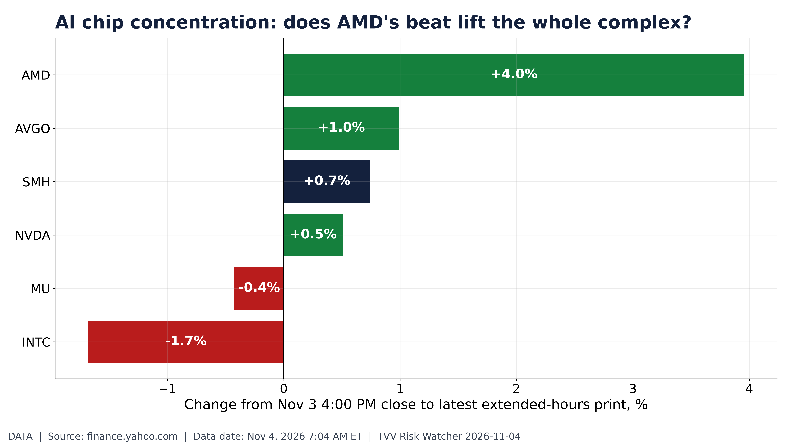
AI chip concentration: does AMD's beat lift the whole complex?. Extended-hours moves of AI chip stocks and SMH after AMD's Nov 3 beat. Yahoo Finance, Nov 4 7:04 AM ET. [Data; data as of Nov 4, 2026 7:04 AM ET] Source: finance.yahoo.com data page
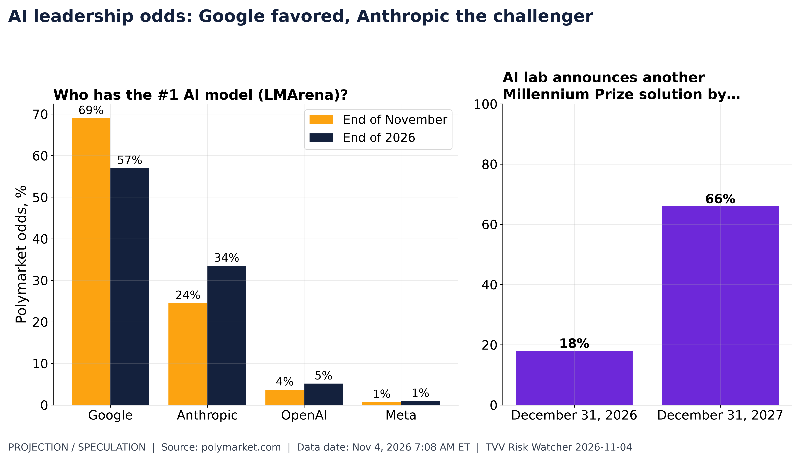
AI leadership odds: Google favored, Anthropic the challenger. Polymarket: Google 69% for #1 AI model end-Nov, 57% end-2026; another AI Millennium Prize solution by end-2027 66%. Polymarket, Nov 4, 2026 7:08 AM ET. [Projection/Speculation; data as of Nov 4, 2026 7:08 AM ET] Source: polymarket.com data page
TECHVESTVENTURES ACTION-ALERT — November 4, 2026 see all graphs click TVV Risk Center
EDITOR — Michael Hentschel
Most news events require or spawn no action or reaction, some (but not many) are or become warnings. We draw attention to substantial lifestyle risks and market risks in particular, some created by Mid-Term Vote anxieties, Middle East tensions, vast over-indebtedness globally, and other events we track. Longer term but capable of causing sudden power surges as serious as the Carrington Event. Climate instability occasioned by long-term cyclical solar electro-magnetic flares, is becoming much more prominent and even more likely. New AI predictive analytics and pattern seekers are pointed in some of these directions, and we monitor imminent likelihood. Some readers might hedge and others might see opportunity. The above is not investment advice.
Graph Sources
• Iran after the midterms: fragile truce, low deal odds: https://polymarket.com/event/us-iran-effective-ceasefire-continues-throughptptpt-20261103
• Iran after the midterms: fragile truce, low deal odds (data): https://polymarket.com/event/next-us-iran-senior-diplomatic-meeting-byptptpt
• Iran after the midterms: fragile truce, low deal odds (data): https://polymarket.com/event/us-reissues-iran-oil-sales-sanction-relief-byptptpt-20260708142359046
• Iran after the midterms: fragile truce, low deal odds (data): https://polymarket.com/event/us-iran-hormuz-agreement-byptptpt-20260803235957575
• Iran after the midterms: fragile truce, low deal odds (data): https://polymarket.com/event/us-iran-final-nuclear-deal-by-20260621201254412
• Iran after the midterms: fragile truce, low deal odds (data): https://polymarket.com/event/iran-full-airspace-closure-byptptpt-20260625195253028
• Iran after the midterms: fragile truce, low deal odds (data): https://polymarket.com/event/will-the-us-invade-iran-before-2027
• Iran after the midterms: fragile truce, low deal odds (data): https://polymarket.com/event/iran-leadership-change-by
• Iran after the midterms: fragile truce, low deal odds (data): https://polymarket.com/event/iran-nuke-before-2027